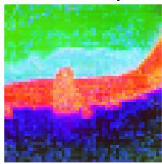

(b) VOC dense-probe mIoU across pretraining epochs and feature layers(b) VOC dense-probe mIoU across pretraining epochs and feature layers. Figure 2: Relationship between CLS spatial grounding and dense prediction quality across training. Left: PiB heatmap showing how well CLS-aligned patches remain localized within foreground regions. Right: VOC dense probing performance across layers and epochs.这张图/表用于判断 Vision Transformers Need Better Token 的实验收益来自哪里。重点看替换、消融或跨模型设置下趋势是否一致，而不是只看单个最高分。

Entmax All-Layer Figure 1: Visualization of the impact of our proposed sparse attention, cEntmax All-Layer Figure 1: Visualization of the impact of our proposed sparse attention, compared with other baselines. We display the first PCA components of model outputs in RGB.这张可视化用来解释 Vision Transformers Need Better Token 学到的中间表征或对齐关系。重点看它是否支持正文里的机制判断。
核心问题
直接触及自监督 ViT 的 token-level dense transfer 问题，对分割、检测和开放词汇 dense prediction 都有启发。
方法拆解
重新分析 ViT prolonged training 后 patch representation 的 dense degradation，提出“semantic diffusion”解释，并用 entmax-1.5 sparse attention 替代 softmax attention。